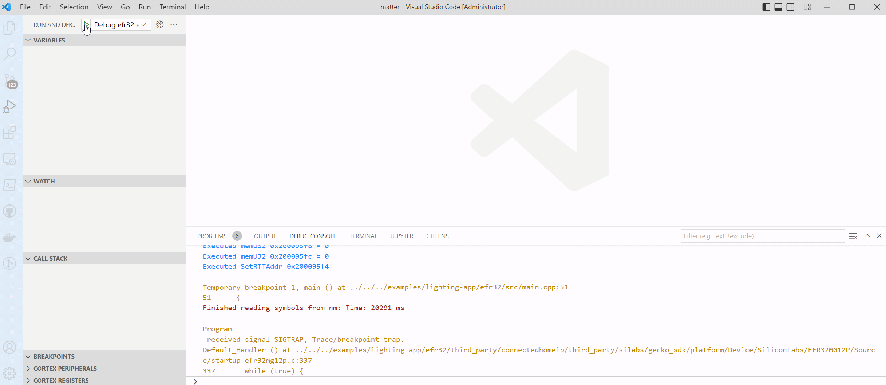

Debugging in VS Code
This section covers remote debugging (GDB jlink) of Matter examples in VS Code.
Requirements
C/C++ Extension Pack (vscode extension) - language support
Cortex-Debug (vscode extension) - GDB debugger support
ARM GCC Toolchain (https://developer.arm.com/open-source/gnu-toolchain/gnu-rm/downloads) - required arm-none-eabi tools
J-Link Software Tools - required J-Link GDB Server for J-Link based debuggers (https://www.segger.com/downloads/jlink)
Settings
Before starting a debug session ensure the following:
- A path to "arm-none-eabi-gdb.exe" is provided in the "Settings.Json" file under the "cortex-debug.gdbPath.windows" property.
- A path to the GDB jlink server executable is provided in the launch.Json file for the property "serverpath". Find this property under the configuration name "Debug efr32 example app"
Debugging
Step 1:
Use the shortcut (Ctrl + Shift + P) to trigger the command pallet.
Step 2:
A drop-down menu will appear along with a prompt. Select the “Debug efr32 example app” and Start Debugging, or press F5 on your keyboard.
Step 3:
Select the example you want to debug.
Step 4:
From the drop-down menu, select the desired target device.
